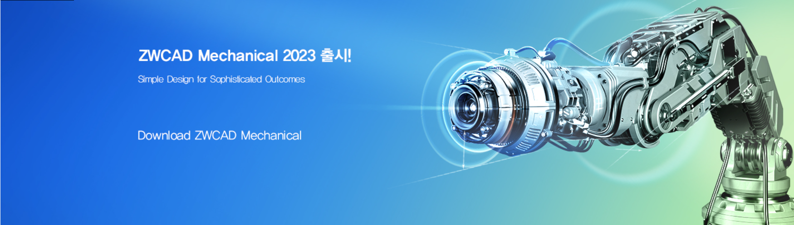
전문 기계 2D 시트 기안
제조용 ZWCAD Mechanical은 기계 2D 시트 도면을 위해 샤프트 생성기, 톨러런스 치수, 표면 텍스처 기호, 풍선(balloon), BOM, 표준 부품 같은 도구들을 풍부하게 제공하고 있습니다.
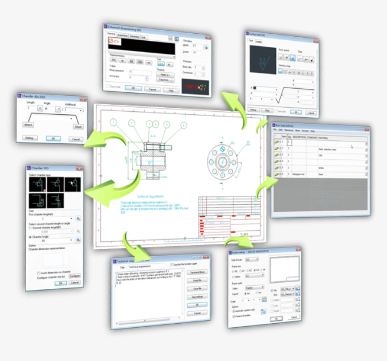
Easy-to-use and 100% DWG Compatible
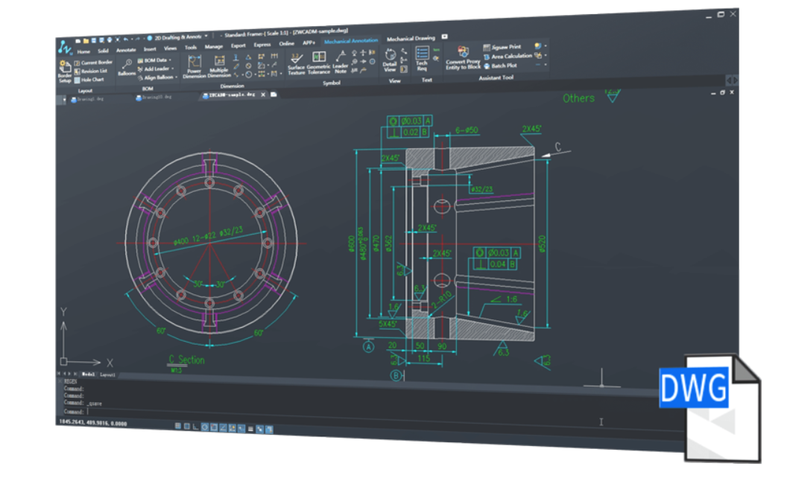
Mechanical도 ZWCAD를 기반으로 친숙한 인터페이스, DWG 100% 호환!
스마트 주석 달기
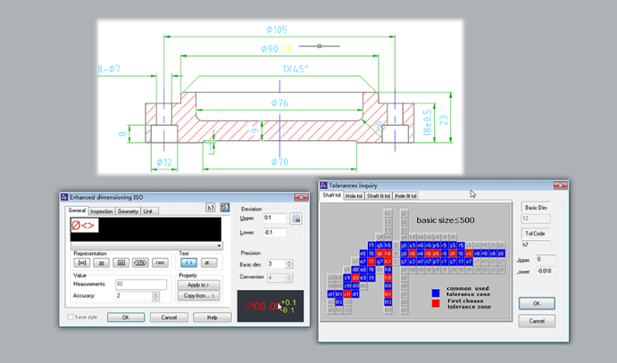
파워 디멘션
파워 디멘션 (Power Dimension)은, 약식 대화상자들을 이용해 손쉽게 치수 표시를 함으로써 제조와 관련된 변수들을 제어, 확대하고 톨러런스(tolerance)와 피트 리스트(fit list) 정보를 통합 합니다.
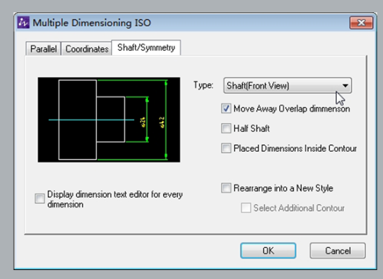
멀티플 디멘션 (Multiple Dimensions)
멀티플 디멘션 (Multiple Dimensions)을 이용해 최소한의 입력 정보만으로 복수의 치수들을 만들 수 있고, 세로좌표나 평행 아이템, 대칭 아이템들의 간격을 적절히 조정할 수 있습니다.
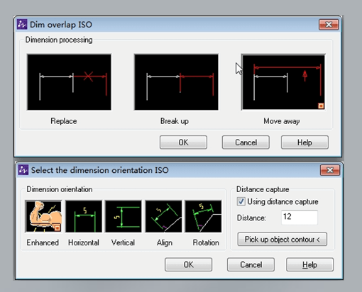
치수 중첩을 탐지하여 적정 거리를 파악
중첩된 치수를 자동으로 조정할 수 있습니다. 특정 치수로 만들어진 오브젝트로부터 적정 거리를 파악하여, 선형 치수를 깔끔하고 또렷하게 보이도록 합니다.
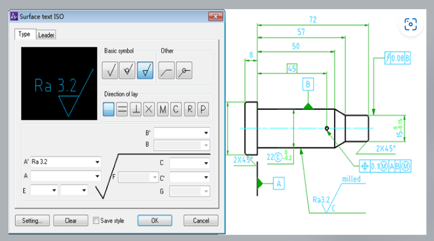
기계 기호를 이용한 빠른 디자인
기계 기호들에는 표면 텍스처 기호(surface texture symbols), 기준점 식별자(datum identifiers), 테이퍼, 센터 홀, 용접 기호 등이 있어 시간을 크게 절약할 수 있고 디자인 정밀도를 높일 수 있습니다.
지능적 Balloon과 BOM
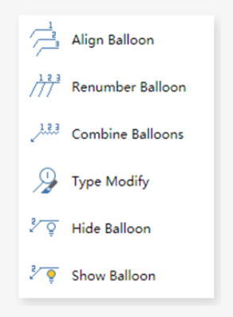
손쉬운 Balloon 생성 및 BOM 생성
ZWCAD Mechanical을 이용하면 표준 기반 Balloon들을 손쉽게 그리고, 배열하며, 번호를 다시 매길 수 있습니다. 한 단계만 거치면 BOM을 만들 수 있습니다. 또한 이것은 표준 부품들을 자동으로 인식하여 이를 BOM에 요약합니다.
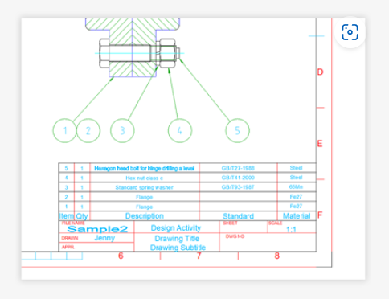
Balloon과 BOM의 연계
Balloon에 대한 모든 변경사항이 그대로 BOM에 업데이트 되기 때문에, 데이터를 항상 정확하며 최신 상태로 유지합니다.
지능적인 도면 환경
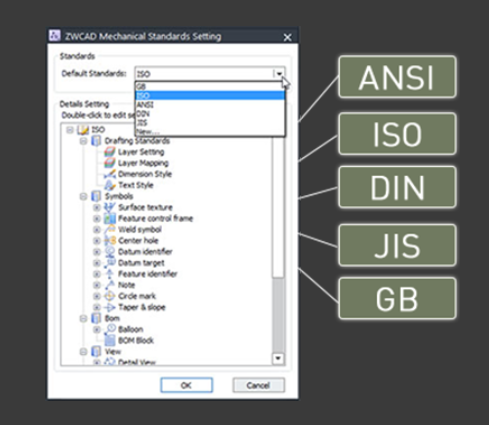
기업 표준 및 국제 표준 지원
ZWCAD Mechanical은 ISO, ANSI, DIN, JIS, GB 도면 환경들을 지원하며, 기업 표준들을 손쉽게 맞춤 화할 수 있습니다.
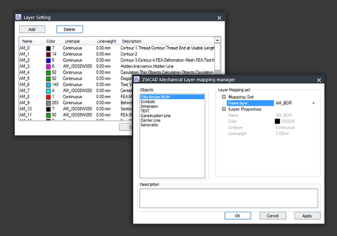
레이어 관리와 레이어 맵핑
경계선, 치수, 기호 등과 같은 모든 기계적 개체는 컬러와 라인타입이 미리 설정된 디폴트 레이어로 배치됩니다. 레이어 맵핑을 통해 기계적 개체를 커스텀 레이어에 배치하여, 기업 실무와 일치시킬 수 있습니다.
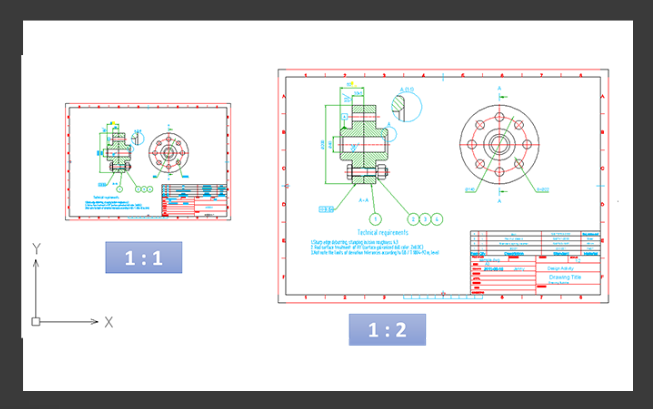
복수의 경계선들과 비율 조정
ZWCAD Mechanical은 복수의 경계선 도면과 서로 다른 여러 가지 비율들을 지원하며, 주석 오브젝트의 크기를 경계선의 비율에 맞춰 변경할 수 있습니다.
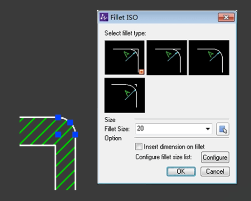
수퍼 편집(Super Edit)
재편집 (Re-editing)이 간편해 오브젝트를 더블 클릭하면, 대화상자 안의 설정들도 자동으로 변경됩니다.
기계 부품들과 생성기
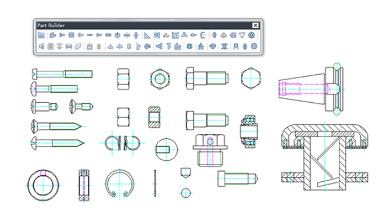
부품 라이브러리 (Part Library)
ZWCAD Part Library에는 나사, 너트, 워셔, 핀, 리벳, 스프링, 베어링 등이 들어 있습니다. 라이브러리에서 바로 부품을 가져올 수 있어 작업 시간이 줄일 수 있습니다.
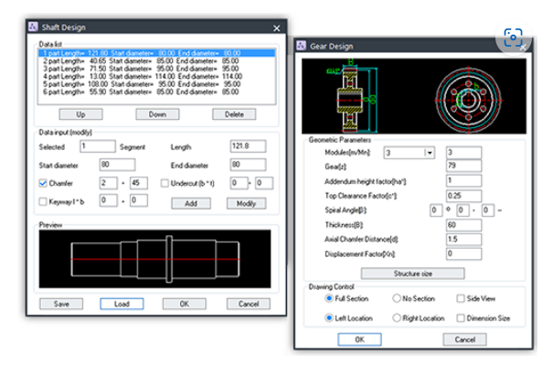
샤프트와 기어
기하학 파라미터를 입력하여 샤프트와 기어를 만들 수 있으며, 그로 인해 전체 디자인 공정의 속도가 크게 빨라집니다.
확장된 제조용 도면 도구들
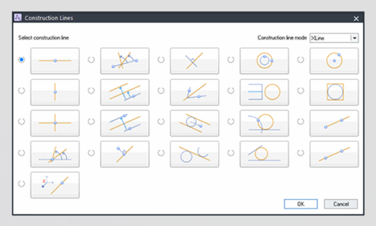
작도선 (Construction lines)
br/>이 프로그램에 들어 있는 총 32 개의 옵션을 이용해 작도선을 만들 수 있고, 7개 옵션으로 작도원을 만들 수 있습니다. 작도선은 다른 오브젝트를 만들고 도면을 쉽게 그리고 싶을 경우, 기준으로 삼을 수 있습니다.
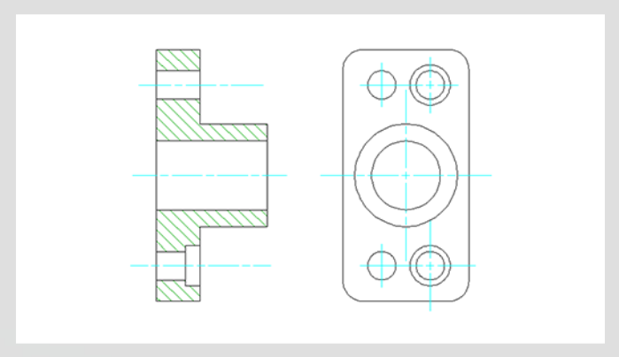
작도선 (Construction lines)
br/>이 프로그램에 들어 있는 총 32 개의 옵션을 이용해 작도선을 만들 수 있고, 7개 옵션으로 작도원을 만들 수 있습니다. 작도선은 다른 오브젝트를 만들고 도면을 쉽게 그리고 싶을 경우, 기준으로 삼을 수 있습니다.
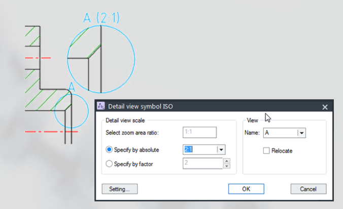
작도선 (Construction lines)
br/>이 프로그램에 들어 있는 총 32 개의 옵션을 이용해 작도선을 만들 수 있고, 7개 옵션으로 작도원을 만들 수 있습니다. 작도선은 다른 오브젝트를 만들고 도면을 쉽게 그리고 싶을 경우, 기준으로 삼을 수 있습니다.
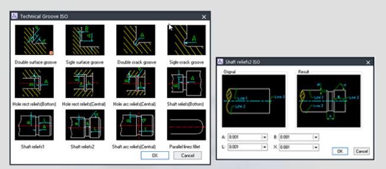
작도선 (Construction lines)
br/>이 프로그램에 들어 있는 총 32 개의 옵션을 이용해 작도선을 만들 수 있고, 7개 옵션으로 작도원을 만들 수 있습니다. 작도선은 다른 오브젝트를 만들고 도면을 쉽게 그리고 싶을 경우, 기준으로 삼을 수 있습니다.